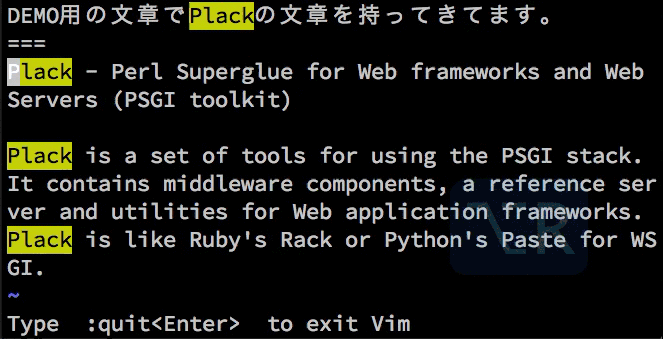
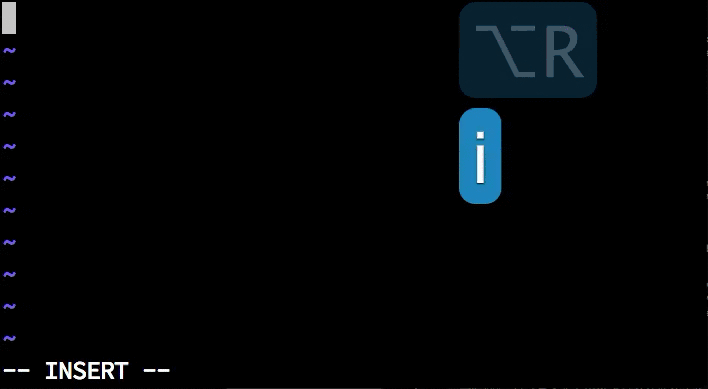

Vim実践入門 ~Perl編~
YAPC::ASIA 2013 9/20 at 慶応大学
株式会社GaiaX Kazuhiro Homma (@kazuph)
Whoami

- @kazuph / 本間 和弘(Kazuhiro Homma)
- Web&SmartPhone Engineer / 株式会社ガイアックス
- 社内でCPAN Authorになろうハッカソンを開催しました！！
- Vimのsnippetについてあまり知らなかったので設定してみたら便利過ぎてつらい
Whoami
去年の素数戦争の企画・運用をやってました

ガイアックス × CodeIQ
言語別開発環境
- メモ(日本語)
- GVim
- Perl
- Vim
- iPhone / Objective-C
- XCode + XVim
- Android / JAVA
- Eclipse + Vimperator
- Chrome
- Vimium
chrome-vim-cheatsheet

完全なるVimmerです
発表することになったきっかけ
typestarさんのEmacsの発表

本当にすいませんm(_ _)m
まさかの裏番か・・・！？

エディター宗教戦争
回避！
裏番組にするのは回避されました！！
本当にありがとうございました！！１
対象
- Vimを使ったことがないけど興味はある
- 使ってみたけど挫折した
- もう一度Vimを基礎から勉強し直したい
- Vimのプラグインに手を出すことに二の足を踏んでいる
- そういえば他人がVimを使ってる光景をあまり見たことがない
- etc...
!!注意!!
※Vimの基礎からは扱いますが初心者向けの速度で発表しません。
※vimtutorを済ましてると理解が捗ると思います。
非対象
Vim戦闘力が1000以上
[参考]Vimの戦闘力を計測する
今日発表しないこと
Vimの中でシェルを実行

暗黒美夢王(ダークネスヴィムマスター)
Vimで走り幅跳び
っていう話はしません！
今日のモチベーション
「動いているVim」と「検索ワード」を
覚えて帰ってもらう
発表後でも学ぶことができるスライド
あじぇんだ
- Vim（自体について）
- Vimの基礎(モード・移動・編集・デフォルト機能)
- VimPlugin(拡張・補完・その他便利な機能)
- VimとPerl
Vim
Vimとは？
- 作者…オランダ人のプログラマーBram Moolenaarさん
- Vi IMproved(viの改良版)で略してVim
- 対応OS
- Unix系、Windows、Mac、Android、iPhone
- 発表現在(2013/09/20)のバージョン…7.4
- 発表の内容は以降特に断りなく最新版のVimを使っている前提で話します
- 特徴
- モードという概念がある
- ショートカットを覚えるのにものすごい記憶力を必要とする
- 初心者のやる気を削ぐ
その他の特徴
2012年のAdventCalendarが終わらない
現在290日以上継続中・・・！！

ネット上の情報の多さが圧倒的
googleトレンド調べ
Vimの話題を日本語で

その他情報ソース
詳しくはWebで
Vimの情報は周りに溢れているので安心して使ってください。
Vimの基礎（前半戦）
⎋:Esc, ⌃:Ctrl, ⇧:Shift, ⇥:Tab
Vimの基礎の内容
- インストール方法
- vimrc
- モードの話
- ファイル開閉
- 移動
- インサートモードモード
- ビジュアルモード
- オペレーター
- モーション
- テキストオブジェクト
- 検索・置換
- ファイル間移動(gf, ctags)
- Exコマンド/外部コマンドの実行
Vimのインストール方法
- Mac
- macvim-kaoriyaよりダウンロード
- Win
- 香り屋さんVimよりダウンロード
Redhat系
以下のコマンドよりインストール
sudo yum install vim-enhanced
Debian系
以下のコマンドよりインストール
sudo apt-get install vim-full
Vimの設定ファイルについて
基本的にはこの場所 $HOME/.vimrc
※Windowsの場合は_vimrcがあると先に読み込まれる
vimrcを瞬時に開く
ショートカットを設定
" .vimrcを瞬時に開く
nnoremap <Space><Space>. :e $MYVIMRC<CR>
" vimrcの設定を反映
nnoremap <Space><Space>.. :<C-u>source $MYVIMRC<CR>
Vimのモード
Vimには大きく分けて4つのモードがある
Vimのモード
- ノーマルモード…基本のモード。移動やコピペ、削除、他のモードへの移行ができ、Escキーなどでいつでも戻ってこれる。
- インサートモード…入力できるモード。いくつか編集を楽にするためのショートカットも使用できる。
- ヴィジュアルモード…テキストを選択して、コピー(yank)したり削除したりできる。コマンドモードとの連携もできる。
- コマンドモード…保存や終了、検索、置換、その他便利なコマンドを使用して編集ができる。
モードが分かれていることについて
- 良い点
- それぞれのモードにプログラマが集中できる
- キーバインドがシンプルになる
- 小指つらいを回避
- 悪い点
- 直感的じゃない(非人間的)
- 記憶力・慣れが必要(学習障壁が高い)
- 初心者殺し
Vimは「慣れ」れば高速！！
プログラマーの最強の武器「Vim」を
使いこなしましょう！
ここから基本コマンドの説明
ファイルを開く、保存、終了
コマンドラインで
$ vim <filename> # 複数ファイルなら vim *.pm
でファイルを開く
保存 :w, 終了 :q, 保存と終了 :wq
ノーマルモードでの移動方法
カーソルキーだめです
上下左右
hjkl を使う

単語ごとに移動
次の単語の先頭 w, 次の単語の末尾e, 前の単語の先頭 b

ファイル先頭・ 末尾
<HOME>キー、<END>キーを使わない
行の頭へ移動する 0,
文章の頭へ移動する ^,
行末へ移動する $
その他
※:se nuで行番号を表示する
「慣れ」れば高速
インサートモード

※Escは Ctrl + [ で代用できる
※⎋:Esc
ヴィジュアルモード
文字選択 v,
行選択 Shift+v,
矩形選択 Ctrl+v
※⎋:Esc
オペーレーターと組み合わせる
削除 d,
置き換え c,
コピー（ヤンク）y,
ペーストp

オペレーターとモーションの組合わせ
例えば削除の場合

※.は直前の操作を繰り返してくれる
テキストオブジェクト
文字の塊を操作する

取り消しと(取り消し)^2
検索
デフォルトが微妙なのでvimrcを設定
検索用vimrc
下の設定をvimrcに書くことで、検索結果をハイライトし、
大文字小文字の区別を無視してくれる。
$HOME/.vimrc
" 検索語を強調表示
set hlsearch
" 検索時に大文字・小文字を区別しない
set ignorecase
" ただし、検索後に大文字小文字が
" 混在しているときは区別する
set smartcase
DEMO
/<検索したい単語> , *でカーソル下の単語を即時検索`

※ハイライトの解除は :nohl
置換
:%s/<置換したいワード>/<置換後のワード>/gc
%は「文章全体」という意味

Visualモードと組み合わせる
選択部分だけに対して置換が行える
ファイル間移動
ファイル名の場所で gf
※Ctrl+oで前ファイルに戻る、Ctrl+iで進む
ctags
Package名部分 or メソッド名部分で Ctrl+] とすることで、
定義箇所へ移動することができる
予めプロジェクト直下で以下のコマンドを実行する必要がある
ctags -R
DEMO

Exコマンドの実行
Exコマンドを実行 :<Exコマンド>,
例) 文章全体をソート :%sort,
選択範囲をソート :'<,'>sort
文章をsortしてみる

cpanfileをソートするときとかに便利
外部コマンドの実行
外部コマンドを実行 :!<外部コマンド>,
例） :!ls, :%!sort, :'<,'>!sort
例えばgitコマンドやperlのワンライナーとかも普通に実行できます
awkとcutでモジュール名だけ抽出する
cpanfileを例に

まだまだ紹介したりませんが、
Vimの標準機能だけですでに色々なことができることがわかったと思います。
VimPlugin(後半戦)
⎋:Esc, ⌃:Ctrl, ⇧:Shift, ⇥:Tab
VimPluginの内容
- Vim全般
- pluginの管理方法
- 加速させられたjk
- 瞬時に目的のファイルを開く
- キャメルとスネーク
- 処理の実行
- ドキュメント
- シンタックスチェック
- 補完・スニペット
- VimとPerl
- オムニ補完
- バリデーション
- Perlのシンタックスハイライト
- テキスト整形
- 文字入力
- テストの実行
VimPluginとは？
デフォルトのVimを更に便利にするもの。 Vimの機能拡張をするものからVimに新たなエコシステムを提供する巨大なプラグインまである。
bundleみたいにpluginを管理する
NeoBundle導入
Vimプラグインを管理するためのプラグイン。
まずはNeoBundleをgit clone
$ mkdir -p ~/.vim/bundle
$ git clone git://github.com/Shougo/neobundle.vim ~/.vim/bundle/neobundle.vim
最低限の~/.vimrcの設定
set nocompatible
if has('vim_starting')
set runtimepath+=~/.vim/bundle/neobundle.vim/
endif
call neobundle#rc(expand('~/.vim/bundle/'))
NeoBundle '...'
filetype plugin indent on
syntax on
NeoBundleCheck
インストールしたいプラグインの記述
例えばvimprocというプラグインをインストールしたい場合
git@github.com:Shougo/vimproc.vim.git
git@github.com:の部分を省略できる
NeoBundle 'Shougo/vimproc'
プラグインのインストール
コマンドモードで :NeoBundleInstall
もしくは NeoBundleCheck を記述しているなら
起動時に半自動でインストール可能
ちなみにアップデートは :NeoBundleUpdate
とういことでここから
いくつか便利なプラグインを紹介
NeoBundleInstallしてる前提で話します
加速させられたjk
.vimrc設定
NeoBundle 'rhysd/accelerated-jk'
let g:accelerated_jk_acceleration_table = [10,5,3]
nmap j <Plug>(accelerated_jk_gj)
nmap k <Plug>(accelerated_jk_gk)
DEMO
左：普通のjk, 右：加速されたjk
上下に高速に移動できる
[実演]瞬時に目的のファイルを開く
CtrlP…
Ctrl+pを押すとファイルリストが開き、
曖昧な文字を入力しても目的のファイルを開ける。
NeoBundle 'kien/ctrlp.vim'
キャメルケース

キャメルケースをスネークケースに置き換える
NeoBundle 'kana/vim-operator-user.git'
NeoBundle 'tyru/operator-camelize.vim'
nmap C <Plug>(operator-camelize-toggle)
様々な言語をVimから実行する

quickrun …
実行は \r
NeoBundle 'thinca/vim-quickrun'
NeoBundle "y-uuki/perl-local-lib-path.vim"
autocmd FileType perl PerlLocalLibPath
ドキュメントを瞬時に引きたい
NeoBundle 'thinca/vim-ref'
 ※別にPerl専用プラグインというわけじゃない
※別にPerl専用プラグインというわけじゃない
syntaxチェックよろ

syntastic …保存時に自動でシンタックスチェックが走る
NeoBundle 'scrooloose/syntastic'
補完を簡単にしたい
本来補完の機能はVim自体にあるが、
それをとても使いやすく提供してくれているもの
設定は長いのでgistに上げました
DEMO
入力中に自動で補完候補が表示される
スニペットで手抜きしたい
neosnippet…登録されているスニペットを補完候補に出し展開する支援をする
設定は長いのでここを参照のこと
スニペットファイル例
snippet #!
#!/usr/bin/env perl
snippet sub
sub ${1:function_name} {
${0}
}
snippet map
map { ${0: body } } ${1: @array } ;
DEMO
⎋:Esc, ⌃:Ctrl, ⇧:Shift, ⇥:Tab
自分のオリジナルsnippetファイルを使う
設定
let g:neosnippet#snippets_directory='~/.vim/bundle/vim-snippets/snippets, ~/dotfiles/snippets'
すぐに開けるようにショートカットの作成
" snippets/perl.snipを瞬時に開く
nnoremap <Space><Space>ps :vs $HOME/dotfiles/snippets/perl.snip<CR>
VimとPerl
⎋:Esc, ⌃:Ctrl, ⇧:Shift, ⇥:Tab
オムニ補完

Ctrl+x, Ctrl+oでモジュール、メソッド候補を表示する
NeoBundle "c9s/perlomni.vim"
ありがちなミスを防ぐ

ファイルエンコーディングミス, パッケージ名間違い
NeoBundle "mattn/perlvalidate-vim.git"
VimのPerlシンタックス力を強化
NeoBundle "vim-perl/vim-perl"
シンタックスハイライトの設定
augroup filetypedetect
au BufNewFile,BufRead *.psgi setf perl
au BufNewFile,BufRead *.t setf perl
au BufNewFile,BufRead *.tt setf tt2html
au BufNewFile,BufRead *.tt2 setf tt2html
au BufNewFile,BufRead cpanfile setf perl
augroup END
※tt2htmlを使用する場合はvim-perlが必須
自動でテキスト整形させる

cpanm Perl::Tidy
nnoremap ,pt <Esc>:%! perltidy -se<CR>
vnoremap ,pt <Esc>:'<,'>! perltidy -se<CR>
入力しづらい文字を簡単に入力

NeoBundle "smartchr"
inoremap <expr> , smartchr#one_of(', ', ', ')
autocmd FileType perl inoremap <buffer> <expr> . smartchr#loop(' . ', '', '.')
autocmd FileType perl inoremap <buffer> <expr> = smartchr#loop(' = ', ' => ', '=')
テストの実行
外部コマンドとしてprove実行でいいかな…
これから
Vimを学べる本
この順番で目を通すと幸せになると思います。
参考URL
Perlについて
今回の発表を実現するvimrc
最後に
Vimはオープンソースであり
チャリティーウェアです
Vimがいいなと思ったら